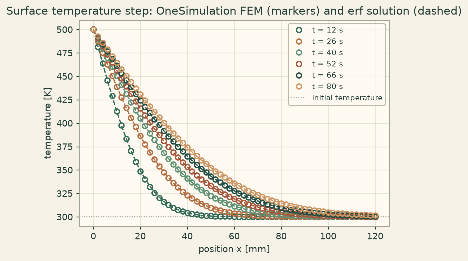
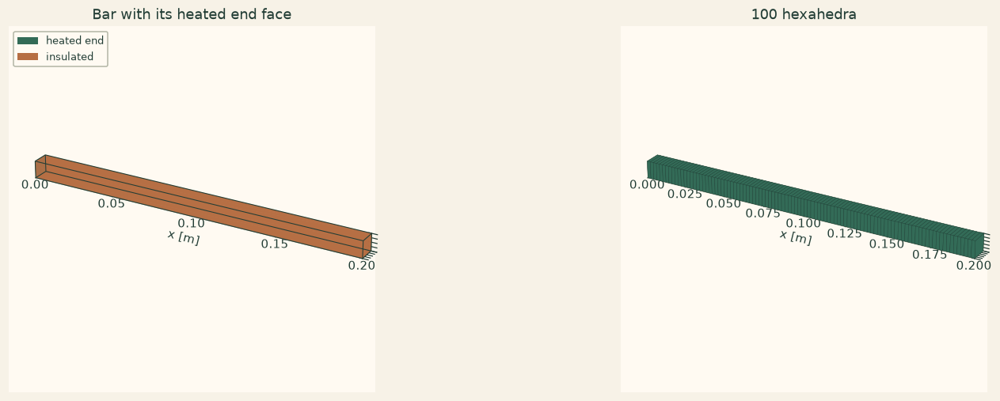

Docs › Examples › Semi-infinite solid with a surface temperature step
Heat transfer · 3D
Semi-infinite solid with a surface temperature step
A long bar whose surface temperature jumps at t=0; the penetrating profile is graded against the error-function solution.
Run locally with OneSimulation. The example downloads are free. Running them requires an activated runtime. Runtime Alpha 0.2.1a7 · CPython 3.13 on macOS (Apple Silicon), Ubuntu 22.04 (x86-64), and Windows x64. Installation and activation · View pilot plans. Scope of the reference checks.

What it computes
OneSimulation integrates transient conduction in a long insulated bar with a sudden fixed surface temperature. The geometry is read from a STEP file with named faces; the script that builds it comes with the notebook.
What it checks
The profile matches (T-T_s)/(T_i-T_s) = erf(x/(2 sqrt(alpha t))) within about 0.4 % while the far end is still unaffected.
Geometry
The notebook starts at the import of the CAD file semi_infinite_step_erfc.step: STEP (AP242), readable by any CAD program, with the names of the faces that the boundary conditions use. Put it next to the notebook.

The geometry script
The script semi_infinite_step_erfc_geometry.py builds the geometry with the CAD objects of OneSimulation and writes the file. Change a dimension there, run it, and run the notebook again.
"""Geometry of the OneSimulation example "Surface temperature step on a long bar".
Builds the bar, 200 mm long with a 10 mm x 10 mm cross-section, with the CAD objects of
OneSimulation and writes semi_infinite_step_erfc.step. The end faces keep their names x_min and
x_max in the file; the four lateral faces form the group sides.
"""
from onesim.cad.d3 import Box
bar = Box(length=0.200, width=0.010, height=0.010)
faces = bar.boundaries
bar = bar.grouped(sides=faces.y_min | faces.y_max | faces.z_min | faces.z_max)
bar.save("semi_infinite_step_erfc.step")The notebook
The complete notebook, cell by cell. Run it to produce the figures and the comparison printout.
A long bar is initially at a uniform temperature \(T_i\). From \(t=0\) on its end face at \(x=0\) is suddenly held at \(T_s\), while the far end and all lateral faces are insulated. As long as the thermal front has not reached the far end, the bar behaves like a semi-infinite solid and the problem is one-dimensional:
The bar comes from the CAD file semi_infinite_step_erfc.step; its end faces are named x_min and x_max, the four lateral faces form the group sides. The script semi_infinite_step_erfc_geometry.py builds it with the CAD objects of OneSimulation. OneSimulation solves the heat equation with quadratic finite elements and the BDF2 time step.
Reference. With \(\alpha=k/(\rho c_p)\), the classical similarity solution is
import numpy as np
from onesim.cad.exchange import load
from onesim.materials import IsotropicSolid
from onesim.meshing import StructuredHexahedralMesher
from onesim.numerics import Numerics
from onesim.numerics.fem import FiniteElement, Lagrange
from onesim.numerics.linear import SparseDirect
from onesim.numerics.time import BDF, BackwardEuler
from onesim.physics.heat_transfer import FixedTemperature, HeatConduction, HeatFlux
from onesim.simulation import Problem, Simulation
from onesim.simulation.initial_conditions import InitialValue
from onesim.visualization import plots, theme
from scipy.special import erf, erfc
theme.set()Geometry and mesh
bar = load("semi_infinite_step_erfc.step")
faces = bar.boundaries
length, cross, _ = bar.size
mesh = StructuredHexahedralMesher(cells=(100, 1, 1)).generate(bar)
fig = plots.figure(1, 2, size=(14, 4.5))
plots.geometry(
bar,
selection={"heated end": faces.x_min, "insulated": faces.x_max | faces.sides},
labels=False,
title="Bar with its heated end face",
ax=fig[0],
)
plots.mesh(
mesh, groups=("all",), legend=False, title=f"{mesh.cell_count} hexahedra", ax=fig[1]
)
plots.show()Model
A steel bar at 300 K whose end face is held at 500 K for 80 s. In that time the thermal front, about \(4\sqrt{\alpha t}\) deep, stays well inside the bar, which keeps the semi-infinite reference valid.
initial, surface, end_time = 300.0, 500.0, 80.0
steel = IsotropicSolid(
density=7850.0,
specific_heat_capacity=460.0,
thermal_conductivity=45.0,
youngs_modulus=200e9,
poisson_ratio=0.3,
thermal_expansion_coefficient=1.2e-5,
)
diffusivity = steel.thermal_conductivity / (
steel.density * steel.specific_heat_capacity
)
model = HeatConduction(domain=bar.volume, material=steel, heating=0.0)
problem = Problem(
name="Surface temperature step on a long bar",
geometry=bar,
physics=(model,),
boundary_conditions=(
FixedTemperature(boundary=faces.x_min, physics=model, value=surface),
HeatFlux(boundary=faces.x_max | faces.sides, physics=model, value=0.0),
),
initial_conditions=(InitialValue(model.temperature, initial),),
)
numerics = Numerics(
spatial=FiniteElement(element=Lagrange(order=2)),
linear_solver=SparseDirect(),
time_integrator=BDF(order=2, startup=BackwardEuler()),
)
result = Simulation(problem=problem, mesh=mesh, numerics=numerics).run(
start_time=0.0, end_time=end_time, time_step=2.0
)
temperature = result.field(model.temperature)Comparison with the error-function solution
The temperature along the centre line at six stored times from 12 s on, when the front spans several elements and time steps, and the temperature change at the far end.
x = np.linspace(0.0, 0.6 * length, 61)
times, profiles = temperature.time_series(
np.column_stack((x, np.full_like(x, cross / 2), np.full_like(x, cross / 2)))
)
times, profiles = times[[6, 13, 20, 26, 33, 40]], profiles[[6, 13, 20, 26, 33, 40]]
exact = surface + (initial - surface) * erf(
x / (2 * np.sqrt(diffusivity * times[:, None]))
)
error = np.abs(profiles - exact).max(axis=1)
far_end = (
temperature.evaluate([[length, cross / 2, cross / 2]], time=end_time).item()
- initial
)
print(
f"penetration depth at the end: {1e3 * 4 * np.sqrt(diffusivity * end_time):.1f} mm of {1e3 * length:.0f} mm"
)
print("time [s] largest deviation from the erf solution [K]")
for time, deviation in zip(times, error):
print(f"{time:8.1f} {deviation:12.3f}")
print(
f"largest deviation: {error.max():.3f} K ({100 * error.max() / (surface - initial):.2f} % of Ts - Ti)"
)
print(
f"temperature change at the far end: {far_end:.2e} K "
f"(semi-infinite solid {(surface - initial) * erfc(length / (2 * np.sqrt(diffusivity * end_time))):.2e} K)"
)Figure
plots.line(
points={
f"t = {time:.0f} s": (1e3 * x, profile)
for time, profile in zip(times, profiles)
},
reference={
f"t = {time:.0f} s": (1e3 * x, profile) for time, profile in zip(times, exact)
},
hlines={"initial temperature": initial},
xlabel="position x [mm]",
ylabel="temperature [K]",
title="Surface temperature step: simulation (markers) and erf solution (dashed)",
)
plots.show()Going further
Refine the mesh along \(x\) or halve the time step and watch the deviation shrink. Shorten the bar in semi_infinite_step_erfc_geometry.py and write the STEP file again: once the front reaches the insulated far end, the semi-infinite reference breaks down. Replacing the fixed temperature by a constant surface heat flux leads to the companion solution with the complementary error function.